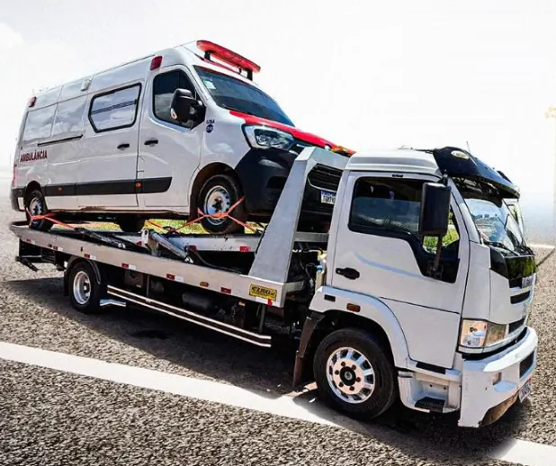

Reboque de carros
Carros de passeio, SUVs, caminhonetes e vans, com plataforma e amarração segura.
Carro quebrou, bateu ou não liga? Chame agora. Rebocamos carros, motos e utilitários com segurança, do jeito que você precisa.

Simples e rápido, em três passos.
Fale com a gente a qualquer hora, dia ou noite.
Diga onde você está, o modelo do veículo e para onde levar.
Passamos o orçamento na hora e seguimos até você.
Atendimento para o dia a dia e para emergências na estrada.
Carros de passeio, SUVs, caminhonetes e vans, com plataforma e amarração segura.
Transporte de motos com fixação adequada, sem riscos na lataria.
Remoção após batida, com cuidado para não agravar os danos.
Carro não pega ou parou no meio do caminho? Levamos até a oficina.
Levamos seu veículo para Brasília, Entorno e outras cidades de Goiás.
Retirada em pátios, oficinas e concessionárias com hora marcada.
Empresa da região. Conhecemos Águas Lindas e o Entorno, por isso chegamos mais rápido.
Preço combinado antes. Você sabe o valor antes de o guincho sair.
Atendimento humano 24h. Quem responde é quem vai até você.
Cuidado com seu veículo. Fixação correta e transporte sem surpresa.
Base em Águas Lindas de Goiás, com atendimento nas cidades vizinhas, no Entorno e no Distrito Federal.
Está em outro lugar? Chame no WhatsApp e consulte.
Sim. Atendemos 24 horas por dia, 7 dias por semana, inclusive sábados, domingos e feriados.
O valor depende da distância, do tipo de veículo e do local da remoção. Chame no WhatsApp com sua localização e o destino e passamos o orçamento na hora, sem compromisso.
Carros de passeio, motos, SUVs, caminhonetes e utilitários leves, inclusive veículos rebaixados e acidentados.
Sim. Fazemos transporte para Brasília, cidades do Entorno e outras cidades de Goiás. Consulte o valor pelo WhatsApp.
Ligue ou chame no WhatsApp, envie sua localização pelo próprio WhatsApp e diga o modelo do veículo e o problema. Confirmamos o valor e o horário de chegada.
Estamos de plantão. Fale com a gente e resolva em minutos.